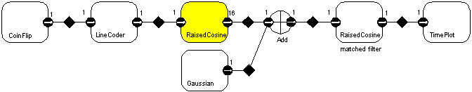

Communication Link - Physical Level
The following plot shows the eye diagram for a received waveform
for a baseband channel with additive Gaussian noise.
The assumptions are:
- Additive Gaussian noise with standard deviation 0.1.
- 100 % excess bandwidth square-root raised-cosine pulse.
- Matched filter in the receiver.
The topology of the model is shown below:

Here, the numbers adjacent to each port indicate the SDF parameters
of the port, namely the number of tokens consumed and produced.